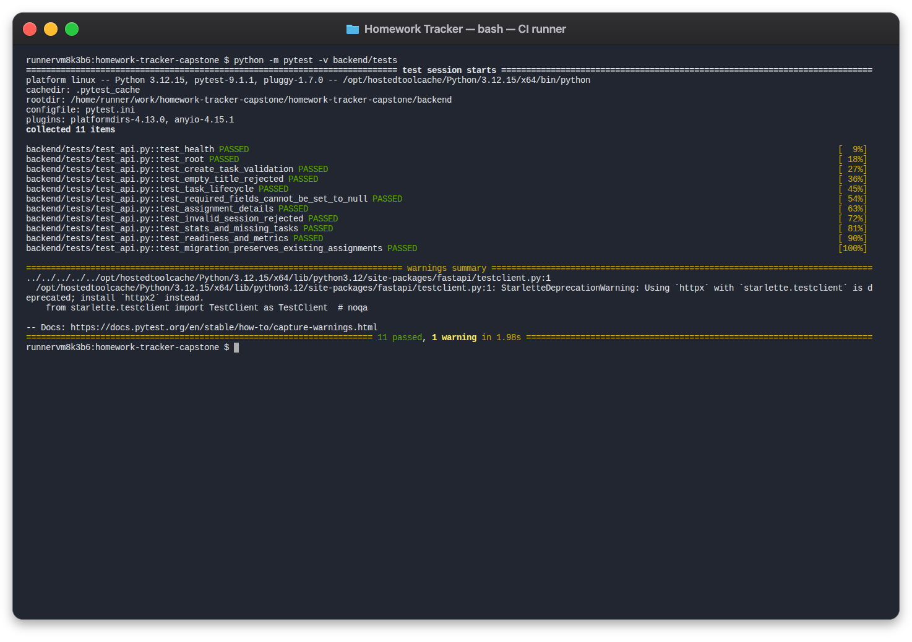
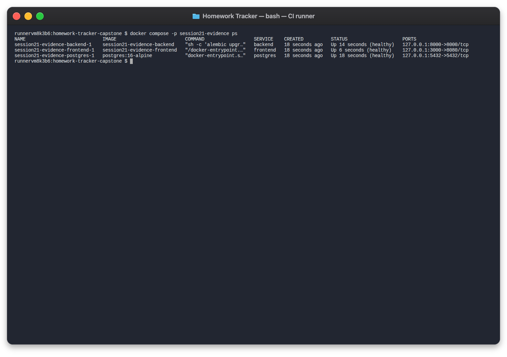
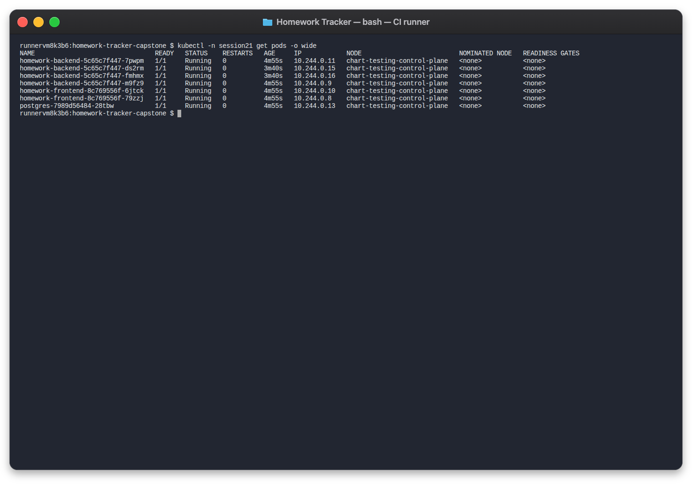
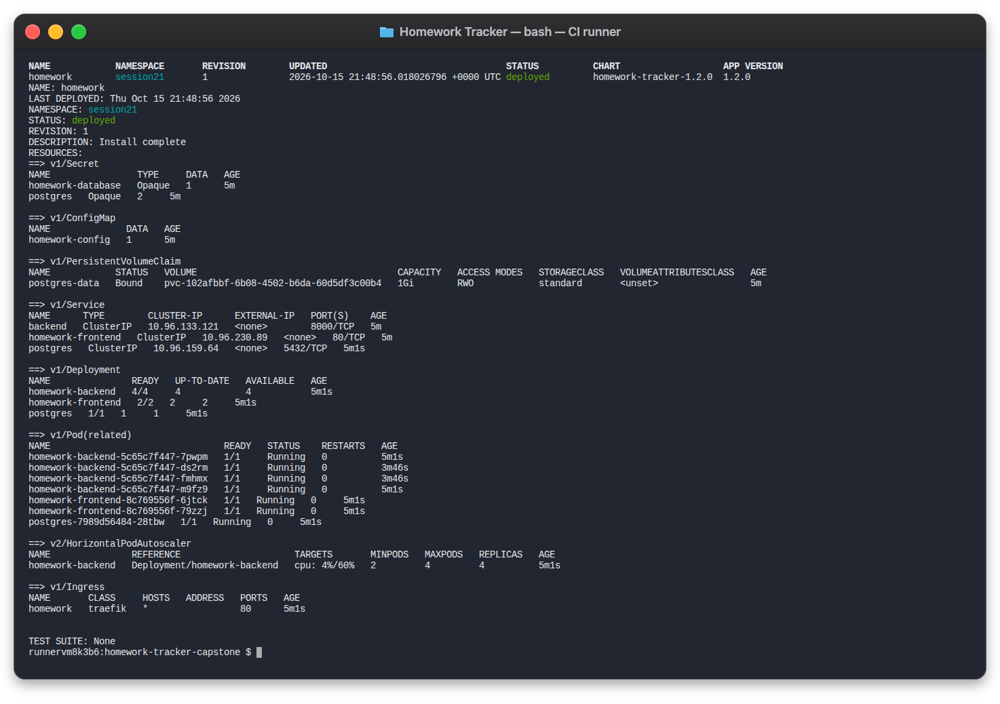
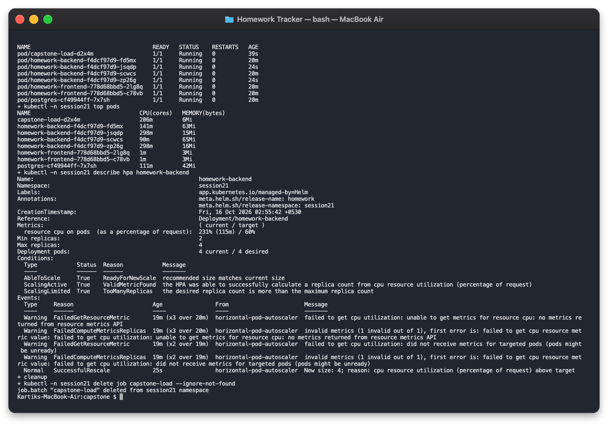
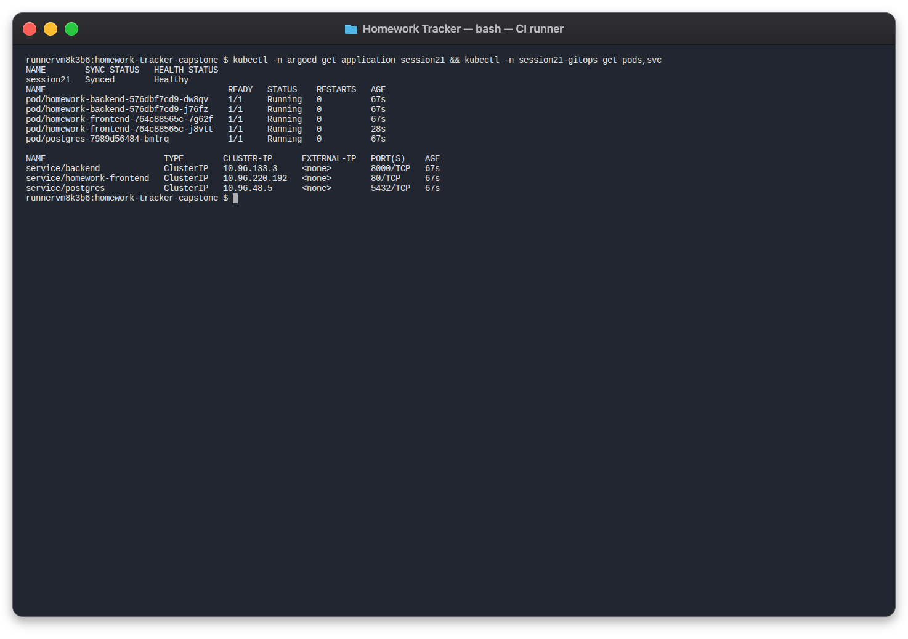
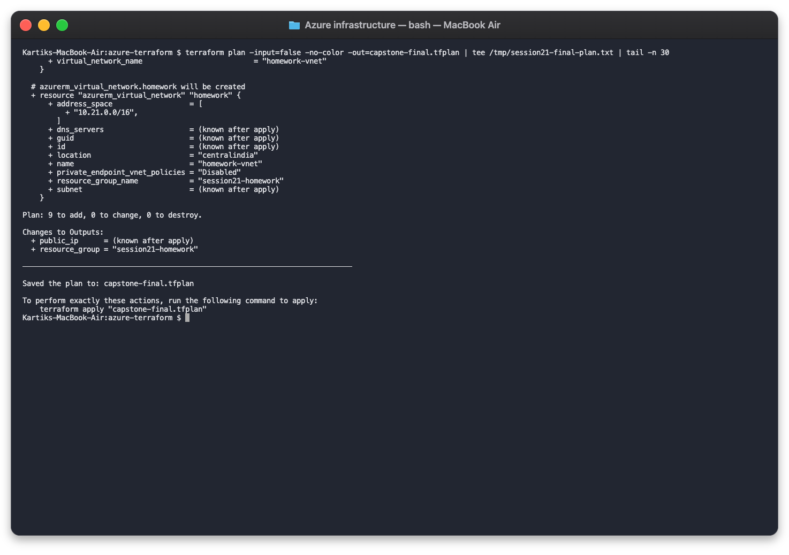
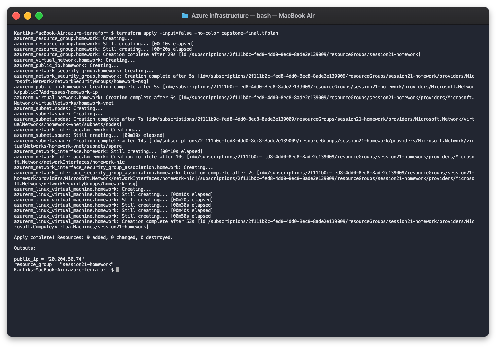
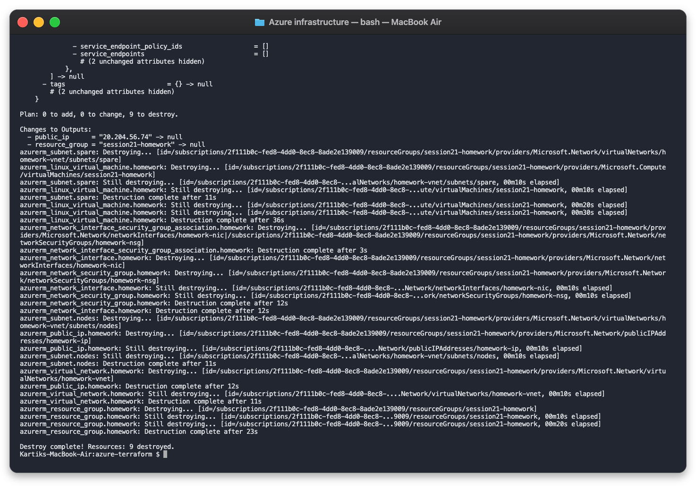
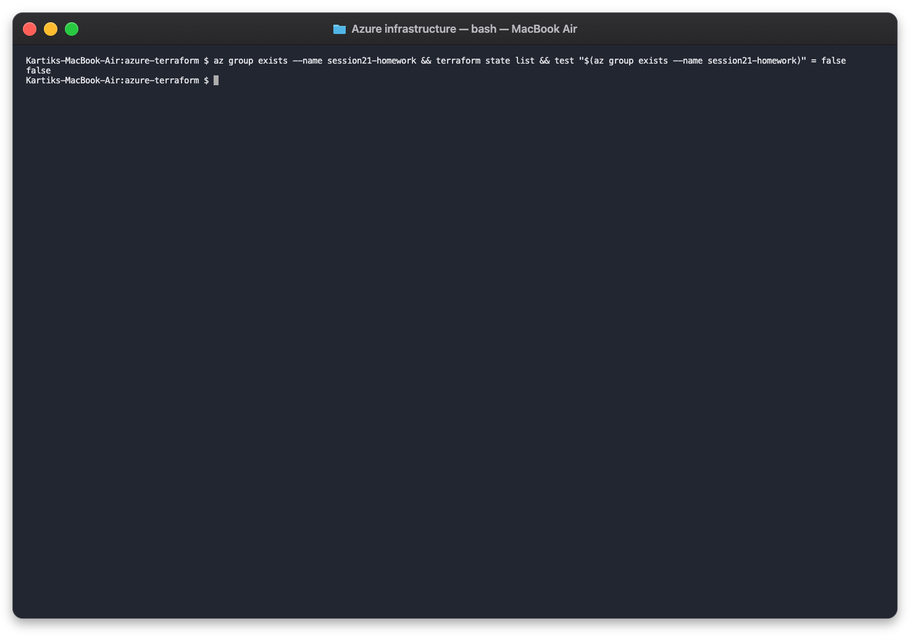

Cloud-Native DevOps Capstone Project
Krish Rabari · DevOps Heroes Advanced Curriculum
An enterprise-grade, cloud-native application to track, schedule, and manage course assignments — built to demonstrate full-lifecycle DevOps engineering.
React 18 Frontend · FastAPI Backend · PostgreSQL 16 Database
| Domain | Technology | Purpose |
|---|---|---|
| Frontend | React 18, Vite, Nginx | Modern responsive SPA dashboard |
| Backend API | Python 3.12, FastAPI | Asynchronous RESTful API |
| Database | PostgreSQL 16, Alembic | Relational storage, migrations |
| Containers | Docker, Compose v2 | Multi-stage, non-root builds |
| Orchestration | K3s, Kind, Kubernetes | Self-healing, service discovery |
| Packaging | Helm 3 | Templated manifests, rollbacks |
| CI/CD | GitHub Actions | Automated pipeline, artifact publishing |
| Security | Bandit, Trivy, pip-audit | SAST, SCA, container CVE scanning |
| GitOps | Argo CD | Declarative continuous reconciliation |
| IaC | Terraform (AzureRM) | Cloud provisioning & teardown |
| Observability | Prometheus, Grafana | Metrics, dashboards, alerting |

Pytest — All 11 tests passing

Docker Compose — All services healthy

Running Kubernetes Pods

Helm release verification

CPU-based autoscaling under load on Azure K3s
CPU Utilization ≥ 50%
Min: 2 → Max: 5
30-second cooldown window
Any manual change to the cluster is automatically reverted to match the declared Git state.

Argo CD reconciliation status

Terraform plan output

Terraform apply — resources provisioned
terraform plan → Preview changesterraform apply → Provisionterraform destroy → Clean teardownZero tolerance for high/critical vulnerabilities before any artifact is published.
| Security Domain | Tool | Policy | Action on Failure |
|---|---|---|---|
| SAST | Bandit | Medium / High severity | Fails CI pipeline |
| SCA | pip-audit & npm audit | CVSS ≥ 7.0 | Fails CI pipeline |
| Secrets | Trivy FS Scanner | Any detected secret | Fails CI pipeline |
| Containers | Trivy Image Scanner | HIGH / CRITICAL CVEs | Blocks GHCR publish |
| Runtime | Non-root execution | UID 10001 / non-root | Enforced in Dockerfile |
/health | Container liveness |
/ready | DB readiness check |
/metrics | Prometheus scraping |
Kubernetes probes (startup, readiness, liveness) ensure zero-downtime deployments and automatic unhealthy pod replacement.

Terraform destroy — all resources removed

Azure portal — resource group deleted
Full cloud lifecycle verified:
plan →
apply →
demo →
destroy
Recorded demonstration — capstone-walkthrough.mp4 (5 min 40 sec)
| Time | Demonstration |
|---|---|
| 00:00 | Azure infrastructure provision (Terraform) |
| 00:52 | Kubernetes cluster & initial Helm release |
| 01:37 | Create assignment, verify persistence |
| 01:43 | Commit change & publish via CI pipeline |
| 01:57 | Tests, Docker Compose, API validation |
| 02:34 | CPU load test & HPA autoscaling |
| 03:21 | Broken image & service recovery |
| 03:37 | Prometheus & Grafana on Azure |
| 04:09 | Successful standalone CI pipeline |
| 05:29 | Updated frontend with existing data |
| 05:34 | Terraform destroy — cleanup |
End-to-end automation from code commit to production deployment with zero manual intervention.
6 independent security gates block any release with critical vulnerabilities.
IaC-managed Azure environment with automated K3s bootstrap via cloud-init.
Argo CD continuously reconciles cluster state with zero configuration drift.
HPA-driven autoscaling responds to real load, verified with automated stress tests.
Prometheus metrics, Grafana dashboards, alerting rules, and structured health probes.